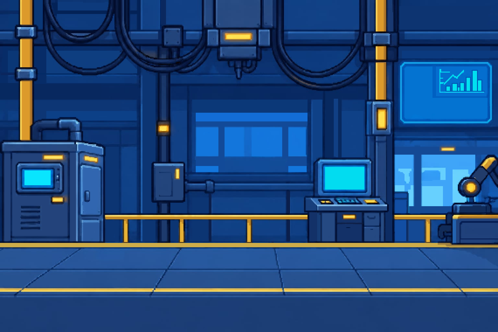
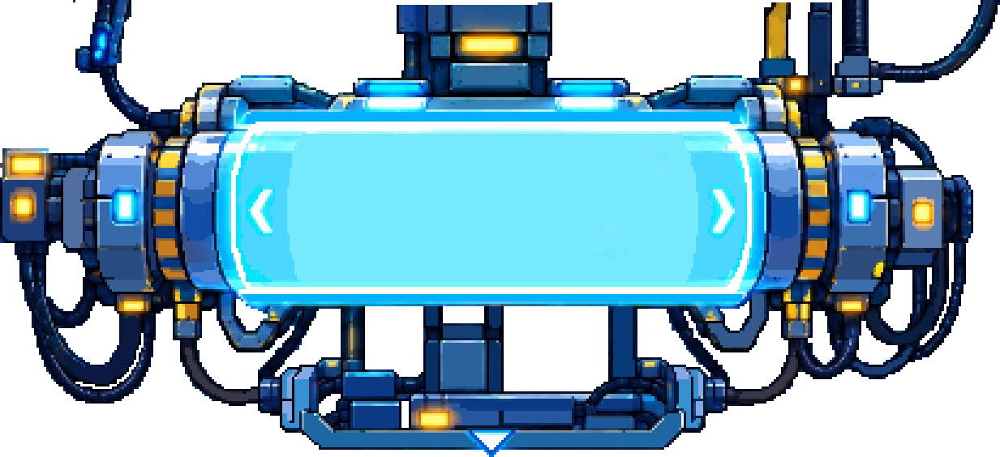
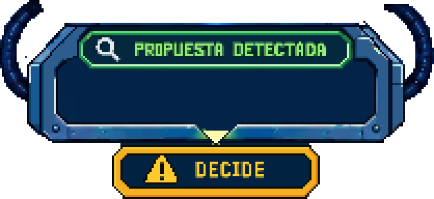
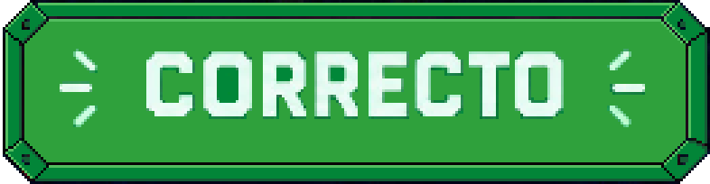
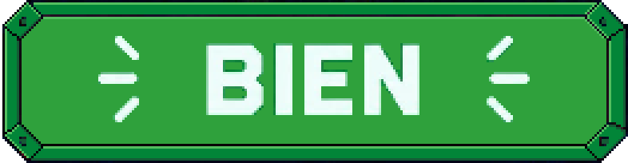
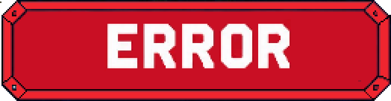

Ayuda
Para simplificar
- Factoriza el numerador y el denominador.
- Cancela solo los factores que se repiten arriba y abajo (lo que está multiplicando a todo).
- Nunca canceles términos sumados o restados: \dfrac{x+5}{x+2} \neq \dfrac{5}{2}.
Casos que vas a encontrar
- División de monomios: divide los números y resta exponentes. \dfrac{8x^{2}}{4x} = 2x
- Factor común: 2x+4 = 2(x+2)
- Diferencia de cuadrados: a^{2}-b^{2} = (a+b)(a-b)
Fábrica de trampas
Cada partida tiene 8 ejercicios elegidos al azar.
Instrucciones
¿En qué consiste?
En la pantalla aparece una fracción algebraica para simplificar. El detector propone dos resultados: uno es correcto y el otro es un engaño.
¿Cómo se juega?
- Lee la fracción de la pantalla y simplifícala factorizando.
- Compara con las dos propuestas.
- Presiona LEFT para elegir la de la izquierda o RIGHT para la de la derecha. También puedes usar las flechas del teclado.
- Después de responder, la pantalla muestra la factorización para que veas por qué.
- Si tienes dudas, presiona el signo de interrogación para ver la ayuda.
Oportunidades
Tienes 3 vidas. Cada respuesta incorrecta te quita una; si caes en una trampa absurda (por ejemplo, cancelar términos que se suman) el detector te avisa. Si pierdes las 3 vidas, el juego termina.
Al terminar
Verás un resumen con tus aciertos, los casos de factorización que conviene repasar y los ejercicios en los que te equivocaste.
Créditos
Facultad de Estudios Superiores Aragón, UNAM
UNAM-DGAPA-PAPIME PE106426
Versión original en JavaScript y HTML
Idea original
Dra. Nelly Rigaud Téllez
Coordinación
Dra. Nelly Rigaud Téllez
Programación original
Alan Marco Velazquez Montiel
Diseño original
Leslie Pamela Flores Solache
Revisión técnica
Act. Luz María Lavin Alanis
Dr. Rigoberto León Sánchez
Mtro. Roberto Blanco Bautista
Mtro. Víctor Francisco Rodríguez Pérez
D.R. © 2026, UNAM. CC BY-NC-ND